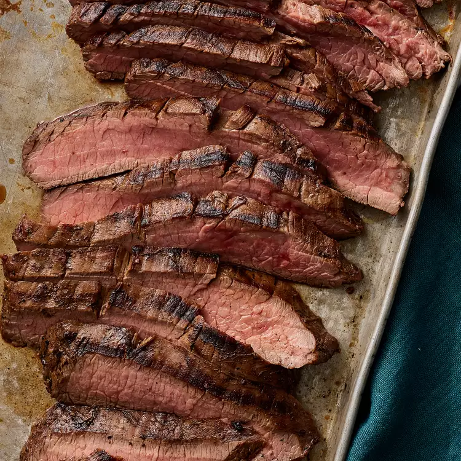

Marinated Flank Steak

Description
Flank steak is a lean cut of beef that comes from the cow's lower
abdominal muscles. It's a relatively tough cut that's low in fat, which
means a few things: Flank steak doesn't need to be trimmed, it's
inexpensive compared to other cuts, and it benefits greatly from
marination.
Ingredients
- Flank-Cut Steak
- Vegetable Oil
- Soy Sauce
- Red Wine Vinegar
- Lemon Juice
- Worcestershire Sauce
- Dijon Mustard
- Garlic
- Ground Pepper
Steps
- Marinate flank-cut steak for 2-6 hours for great results
On the Grill
- Preheat a lightly oiled outdoor grill to medium-high heat
- Take out steak and grill on each side to desired doneness.
-
The steak is done when a meat thermometer inserted into the center reads
between 130 degrees F and 145 degrees F.
In the Oven
- Season and marinate the steak according to your recipe
- Arrange the steaks in a baking dish lined with aluminum foil.
-
Bake until a meat thermometer inserted into the center of the steak
reads between 130 degrees F and 145 degrees F.
On the Stove
- Season and marinate the steak according to your recipe.
-
Sear the steaks in a cast-iron skillet until lightly browned on the
bottom, then flip to the other side and repeat.
-
Finish the steaks in a preheated oven. Bake until a meat thermometer
inserted into the center of the steak reads between 130 degrees F and
145 degrees F.
Depending on the degree of doneness you're after. This marinated flank
steak should be totally cooked after about 5 minutes of grilling time on
each side. Of course, tastes and preferences will vary.
Pair your
marinated flank steak with a side salad, grilled or roasted veggies, or
something starchy (such as mashed potatoes or French fries).
Directions
-
Step 1
Whisk together oil, soy sauce, vinegar, lemon juice, Worcestershire
sauce, Dijon mustard, garlic, and pepper for marinade in a 9x13-inch
glass baking dish until thoroughly combined.
-
Step 2
Add flank steak to the baking dish; turn several times to coat
thoroughly with marinade. Cover, and refrigerate for 2 to 6 hours, or up
to 12 hours if you have time.
-
Step 3
When ready to cook, preheat an outdoor grill for medium-high heat and
lightly oil the grate.
-
Step 4
Remove steak from the marinade and shake off excess. Discard the
remaining marinade.
-
Step 5
Cook steak on the preheated grill for about 5 minutes per side, or to
desired doneness.
-
Step 6
Remove from the grill and let rest for 5 minutes before slicing and
serving.